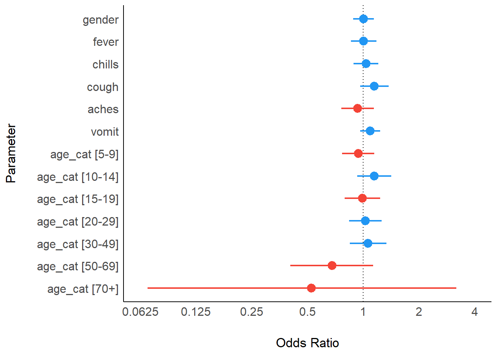

19 Hồi quy đơn và đa biến
Trong chương này, chúng tôi trình bày cách sử dụng các hàm hồi quy trong base R rnhư hàm glm() và package gtsummary để xem xét các mối liên quan giữa các biến (ví dụ như tỷ số chênh, tỷ số nguy cơ, tỷ số rủi ro). Chúng tôi cũng trình bày cách sử dụng các hàm như tidy() trong package broom để sắp xếp các kết quả hồi quy.
- Phân tích đơn biến: bảng 2 x 2
- Phân tích phân tầng: ước lượng của mantel-haenszel
- Phân tích đa biến: lựa chọn biến số, lựa chọn mô hình, mô hình cuối cùng
- Biểu đồ Forest plot
Đối với hồi quy Cox, xem chương Phân tích sống còn.
CHÚ Ý: Chúng tôi sử dụng thuật ngữ đa biến (multivariable) để nói đến một hồi quy có nhiều biến giải thích. Thuật ngữ này khác với mô hình đa biến (multivariate model), là một mô hình đa biến có nhiều biến kết cục – xem chi tiết trong bài xã luận này
19.1 Chuẩn bị
Gọi packages
Đoạn mã này hiển thị cách tải các gói lệnh cần thiết cho phân tích. Trong cuốn sổ tay này, chúng tôi nhấn mạnh hàm p_load() thuộc package pacman, giúp cài đặt package khi cần thiết và gọi nó ra để sử dụng. Có thể gọi các package đã cài đặt bằng hàm library() trong base R. Xem thêm thông tin về các package của R trong chương R cơ bản.
pacman::p_load(
rio, # File import
here, # File locator
tidyverse, # data management + ggplot2 graphics,
stringr, # manipulate text strings
purrr, # loop over objects in a tidy way
gtsummary, # summary statistics and tests
broom, # tidy up results from regressions
lmtest, # likelihood-ratio tests
parameters, # alternative to tidy up results from regressions
see # alternative to visualise forest plots
)Nhập số liệu
Chúng tôi nhập bộ số liệu của các ca bệnh được mô phỏng từ một vụ dịch Ebola. Để tiện làm theo, bấm để tải số liệu linelist “đã được làm sạch” (dưới dạng tệp .rds ). Nhập số liệu này bằng hàm import() trong package rio (nó chấp nhận nhiều loại tập tin như .xlsx, .rds, .csv – xem chi tiết trong chương Nhập xuất dữ liệu).
Bên dưới là hiển thị của 50 hàng đầu tiên của bộ số liệu linelist.
Làm sạch số liệu
Lưu trữ các biến giải thích
Tên của các biến giải thích sẽ được lưu trữ dưới dạng một véc tơ ký tự. Véc tơ này sẽ được đề cập về sau.
Chuyển đổi sang số 1 và số 0
Sau đây, giá trị của các biến giải thích được chuyển đổi từ “có”/“không”, “nam”/“nữ” và “chết”/“sống” thành 1 / 0, để hợp với các đặc tính của mô hình hồi quy logistic. TĐể thực hiện việc này một cách hiệu quả, sử dụng hàm across() từ dplyr để chuyển đổi nhiều biến cùng một lúc. Để áp dụng cho mỗi biến, dùng hàm case_when() (cũng trong package dplyr) để chuyển đổi các giá trị cụ thể thành 1 và 0. Xem các mục về across() và case_when() trong chương Làm sạch số liệu và các hàm quan trọng).
Chú ý: dấu “.” bên dưới đại diện cho cột`````đang được xử lý trong hàmacross()` tại thời điểm đó.
## convert dichotomous variables to 0/1
linelist <- linelist %>%
mutate(across(
.cols = all_of(c(explanatory_vars, "outcome")), ## for each column listed and "outcome"
.fns = ~case_when(
. %in% c("m", "yes", "Death") ~ 1, ## recode male, yes and death to 1
. %in% c("f", "no", "Recover") ~ 0, ## female, no and recover to 0
TRUE ~ NA_real_) ## otherwise set to missing
)
)Loại bỏ các hàng có giá trị missing
Để bỏ các hàng có giá trị missing, dùng hàm drop_na() trong package tidyr. Tuy nhiên, chúng ta chỉ muốn thực hiện điều này cho các hàng có giá trị missing đối với các cột đang được quan tâm.
Trước hết, chúng ta phải đảm bảo rằng vectơ explanatory_vars bao gồm các biến age (age có thể tạo ra một lỗi trong thao tác của hàm case_when() trước đó, mà chỉ dành cho biến nhị phân). Sau đó chúng ta pipe bộ dữ liệu linelist tới hàm drop_na() để bỏ các hàng có giá trị missing cho biến outcome hoặc bất kỳ biển giải thích explanatory_vars nào.
Trước khi thực hiện các lệnh này, kiểm tra số hàng trong bộ số liệu linelist bằng hàm nrow(linelist).
## add in age_category to the explanatory vars
explanatory_vars <- c(explanatory_vars, "age_cat")
## drop rows with missing information for variables of interest
linelist <- linelist %>%
drop_na(any_of(c("outcome", explanatory_vars)))Kiểm tra số hàng còn lại của linelist bằng hàm nrow(linelist).
19.2 Phân tích đơn biến
Cũng giống như chương Bảng mô tả, chúng ta cần xác định packahe nào trong R mà chúng ta muốn sử dụng. Chúng tôi trình bày hai chọn lựa để thực hiện các phân tích đơn biến:
- Dùng hàm có sẵn trong base để in nhanh kết quả ra console. Sử dụng package broom để làm gọn kết quả.
- Dùng package gtsummary để lập mô hình và nhận các kết quả đầu ra sẵn sàng để công bố
base R
Hồi quy tuyến tính
Hàm lm() trong base cho phép thực hiện hồi quy tuyến tính để đánh giá mối quan hệ giữa biến đầu ra dạng số (numeric) và các biến giải thích mà được giả định là có mối quan hệ tuyến tính.
Cung cấp phương trình dưới dạng công thức với tên của biến đầu ra và các biến giải thích được phân tách bằng dấu ngã ~. Bên cạnh đó, chỉ rõ bộ số liệu nào được sử dụng với data =. Kết quả của mô hình được định nghĩa dưới dạng đối tượng của R để sử dụng về sau.
Sau đó tóm tắt kết quả của mô hình bằng hàm summary() để xem các hệ số (ước tính), P-value, phần dư và các đo lường khác.
##
## Call:
## lm(formula = ht_cm ~ age, data = linelist)
##
## Residuals:
## Min 1Q Median 3Q Max
## -128.579 -15.854 1.177 15.887 175.483
##
## Coefficients:
## Estimate Std. Error t value Pr(>|t|)
## (Intercept) 69.9051 0.5979 116.9 <2e-16 ***
## age 3.4354 0.0293 117.2 <2e-16 ***
## ---
## Signif. codes: 0 '***' 0.001 '**' 0.01 '*' 0.05 '.' 0.1 ' ' 1
##
## Residual standard error: 23.75 on 4165 degrees of freedom
## Multiple R-squared: 0.7675, Adjusted R-squared: 0.7674
## F-statistic: 1.375e+04 on 1 and 4165 DF, p-value: < 2.2e-16Ngoài ra, có thể dùng hàm tidy() trong package broom để xuất kết quả vào trong một bảng. Kết quả bên dưới cho chúng ta biết khi tăng thêm một tuổi thì chiều cao tăng 3,5 cm và mối quan hệ này có ý nghĩa thống kê.
## # A tibble: 2 × 5
## term estimate std.error statistic p.value
## <chr> <dbl> <dbl> <dbl> <dbl>
## 1 (Intercept) 69.9 0.598 117. 0
## 2 age 3.44 0.0293 117. 0Sau đó, có thể sử dụng kết quả hồi quy này để đưa vào ggplot. Để thực hiện điều này, trước tiên chúng ta đưa các giá trị quan sát và đường thẳng hồi quy (fitted line) vào một data frame bằng cách dùng hàm augment() trong package broom.
## pull the regression points and observed data in to one dataset
points <- augment(lm_results)
## plot the data using age as the x-axis
ggplot(points, aes(x = age)) +
## add points for height
geom_point(aes(y = ht_cm)) +
## add your regression line
geom_line(aes(y = .fitted), colour = "red")
Bạn cũng có thể vẽ đường hồi quy tuyến tính đơn bằng package ggplot thông qua hàm geom_smooth().
## add your data to a plot
ggplot(linelist, aes(x = age, y = ht_cm)) +
## show points
geom_point() +
## add a linear regression
geom_smooth(method = "lm", se = FALSE)## `geom_smooth()` using formula = 'y ~ x'
Xem thêm các hướng dẫn chi tiết trong mục Nguồn ở cuối chương này.
Hồi quy Logistic
Hàm glm() trong package stats (một phần của base R) được sử dụng để fit (chọn mô hình dự đoán tối ưu dựa trên số liệu quan sát) đối với Mô hình Tuyến tính Tổng quát (GLM).
glm() có thể được sử dụng cho cả hồi quy logistic đơn biến và đa biến (ví dụ như để tính tỷ số chênh OR). Sau đây là những thành phần chính của hàm:
formula =Mô hình được cung cấp choglm()dưới dạng một phương trình với biến kết cục ở bên trái và biến giải thích ở bên phải dấu ngã~.
family =Xác định loại mô hình sẽ thực hiện. Đối với hồi quy logistic, sử dụngfamily = "binomial", đối với hồi quy poisson sử dụngfamily = "poisson". Các ví dụ khác được trình bày trong bảng bên dưới.
data =Cụ thể bộ số liệu
Nếu cần, có thể cụ thể hàm liên kết bằng cú pháp family = familytype(link = "linkfunction")). Bạn có thể tìm đọc thêm về các họ hồi quy khác và các tùy chọn đối số như là weights = và subset = bằng cách gõ (?glm).
| Họ | Hàm liên kết mặc định |
|---|---|
"binomial" |
(link = "logit") |
"gaussian" |
(link = "identity") |
"Gamma" |
(link = "inverse") |
"inverse.gaussian" |
(link = "1/mu^2") |
"poisson" |
(link = "log") |
"quasi" |
(link = "identity", variance = "constant") |
"quasibinomial" |
(link = "logit") |
"quasipoisson" |
(link = "log") |
Khi thực hiện glm() , phổ biến nhất là lưu kết quả dưới dạng một đối tượng của R được đặt tên. Sau đó, có thể xuất kết quả ra console bằng cách sử dụng hàm summary() như được trình bày bên dưới, hoặc thực hiện các thao tác khác từ kết quả (ví dụ như lấy lũy thừa).
Nếu cần thực hiện một hồi quy nhị thức âm, có thể sử dụng package MASS. Hàn glm.nb() uses cũng sử dụng cùng cú pháp như glm(). Để xem qua các hồi quy khác, xem trên trang thống kê của UCLA.
Phân tích đơn biến sử dụng glm()
Trong ví dụ này, chúng tôi đánh giá mối liên quan giữa nhóm tuổi và biến kết cục tử vong (được mã hóa là 1 trong phần chuẩn bị). Bên dưới là một mô hình đơn biến của biến kết cục outcome theo age_cat. Chúng tôi lưu kết quả đầu ra được đặt tên là model và sau đó in kết quả đến console bằng hàm summary(). Lưu ý, các ước tính được tạo ra là các giá trị lôgarít của tỷ số chênh (log odds) và giá trị tham chiếu là giá trị đầu tiên của biến age_cat (“0-4”).
##
## Call:
## glm(formula = outcome ~ age_cat, family = "binomial", data = linelist)
##
## Coefficients:
## Estimate Std. Error z value Pr(>|z|)
## (Intercept) 0.233738 0.072805 3.210 0.00133 **
## age_cat5-9 -0.062898 0.101733 -0.618 0.53640
## age_cat10-14 0.138204 0.107186 1.289 0.19726
## age_cat15-19 -0.005565 0.113343 -0.049 0.96084
## age_cat20-29 0.027511 0.102133 0.269 0.78765
## age_cat30-49 0.063764 0.113771 0.560 0.57517
## age_cat50-69 -0.387889 0.259240 -1.496 0.13459
## age_cat70+ -0.639203 0.915770 -0.698 0.48518
## ---
## Signif. codes: 0 '***' 0.001 '**' 0.01 '*' 0.05 '.' 0.1 ' ' 1
##
## (Dispersion parameter for binomial family taken to be 1)
##
## Null deviance: 5712.4 on 4166 degrees of freedom
## Residual deviance: 5705.1 on 4159 degrees of freedom
## AIC: 5721.1
##
## Number of Fisher Scoring iterations: 4Để thay đổi giá trị tham chiếu của một biến Factor và chuyển giá trị mong muốn lên vị trí đầu tiên, dùng hàm fct_relevel() (xem chương Factors). Ở ví dụ bên dưới, chúng tôi lấy biến age_cat và đặt nhóm tuổi “20-29” làm giá trị tham chiếu trước khi chuyển số liệu đã sửa đổi vào hàm glm().
linelist %>%
mutate(age_cat = fct_relevel(age_cat, "20-29", after = 0)) %>%
glm(formula = outcome ~ age_cat, family = "binomial") %>%
summary()##
## Call:
## glm(formula = outcome ~ age_cat, family = "binomial", data = .)
##
## Coefficients:
## Estimate Std. Error z value Pr(>|z|)
## (Intercept) 0.26125 0.07163 3.647 0.000265 ***
## age_cat0-4 -0.02751 0.10213 -0.269 0.787652
## age_cat5-9 -0.09041 0.10090 -0.896 0.370220
## age_cat10-14 0.11069 0.10639 1.040 0.298133
## age_cat15-19 -0.03308 0.11259 -0.294 0.768934
## age_cat30-49 0.03625 0.11302 0.321 0.748390
## age_cat50-69 -0.41540 0.25891 -1.604 0.108625
## age_cat70+ -0.66671 0.91568 -0.728 0.466546
## ---
## Signif. codes: 0 '***' 0.001 '**' 0.01 '*' 0.05 '.' 0.1 ' ' 1
##
## (Dispersion parameter for binomial family taken to be 1)
##
## Null deviance: 5712.4 on 4166 degrees of freedom
## Residual deviance: 5705.1 on 4159 degrees of freedom
## AIC: 5721.1
##
## Number of Fisher Scoring iterations: 4In kết quả
Đối với hầu hết các mục đích sử dụng, kết quả đầu ra cần phải có một số sửa đổi. Hàm làm gọn tidy() trong package broom có những tiện lợi để hiển thị kết quả của mô hình.
Ở đây, chúng tôi trình bày cách để kết hợp các kết quả đầu ra của mô hình vào trong một bảng.
- Lấy lũy thừa logarit của ước lượng tỉ số chênh OR và khoảng tin cậy bằng cách đưa mô hình vào hàm
tidy()và thiết lập lũy thừaexponentiate = TRUEvàconf.int = TRUE.
model <- glm(outcome ~ age_cat, family = "binomial", data = linelist) %>%
tidy(exponentiate = TRUE, conf.int = TRUE) %>% # exponentiate and produce CIs
mutate(across(where(is.numeric), round, digits = 2)) # round all numeric columnsBên dưới là bảng kết quả đầu ra của model:
- Kết hợp các kết quả của mô hình vào trong một bảng đếm. Dưới đây, chúng tôi tạo một bảng đếm bằng hàm
tabyl()từ package janitor, như được đề cập trong chương Bảng mô tả.
Đây là cách mà bảng counts_table được hiển thị:
Bây giờ chúng ta có thể nối bảng counts_table và kết quả của mô hình model lại với nhau theo chiều ngang bằng hàm nối cột bind_cols() (dplyr). Hãy nhớ rằng đối với hàm bind_cols() các hàng trong hai cấu trúc dữ liệu trên phải được căn chỉnh hoàn hảo. Trong đoạn code này, bởi vì chúng ta đang thực hiện một chuỗi các thuật toán pipe, chúng ta sử dụng dấu . để đại diện cho đối tượng được nối trong bảng đếm counts_table khi chúng tôi nối nó với kết quả mô hình model. Để kết thúc quy trình này, chúng ta sử dụng hàm select() để chọn các cột mong muốn và thứ tự của nó, và cuối cùng áp dụng hàm round() trong base R để làm tròn với hai chữ số thập phân cho tất cả các cột.
combined <- counts_table %>% # begin with table of counts
bind_cols(., model) %>% # combine with the outputs of the regression
select(term, 2:3, estimate, # select and re-order cols
conf.low, conf.high, p.value) %>%
mutate(across(where(is.numeric), round, digits = 2)) ## round to 2 decimal placesĐây là hiển thị của cấu trúc đã được kết hợp, nó được xuất gọn gẽ dưới dạng một hình bằng thông qua một hàm trong package flextable. Chương Trình bày bảng giải thích cách tùy chỉnh các bảng như vậy bằng flextable, hoặc có thể sử dụng các gói lệnh khác như knitr hoặc GT.
Vòng lặp cho nhiều mô hình đơn biến
Sau đây chúng tôi trình bày một phương pháp sử dụng glm() và tidy() để có một cách tiếp cận đơn giản hơn, xem thêm ở phần gtsummary.
Để thực hiện các mô hình cho một số biến giải thích và cho ra các tỷ số chênh trong phân tích đơn biến (nghĩa là không có kiểm soát lẫn nhau), chúng ta có thể sử dụng các cách tiếp cận dưới đây. Sử dụng hàm str_c() từ package stringr để tạo ra các công thức cho phân tích đơn biến (xem chương Ký tự và chuỗi), thực hiện hàm glm() cho mỗi công thức, chuyển mỗi kết quả đầu ra của glm() đến hàm tidy() và cuối cùng thu gọn lại tất các kết quả đầu ra của mô hình bằng hàm nối dòng bind_rows() từ tidyr. Phương pháp này sử dụng hàm map() từ package purrr để lặp - xem chương [Lặp, vòng lặp và danh sách] để biết thêm thông tin về công cụ này.
Tạo một véctơ tên các cột của biến giải thích. Chúng ta đã tạo biến này
explanatory_varstrong phần chuẩn bị của chương này.Sử dụng hàm
str_c()để tạo các công thức chuỗi với biến kết cụcoutcomeở bên trái và tên một cột của véctơexplanatory_varsở bên phải. Dấu chấm.trong hàm này thay thế cho tên cột trong véctơexplanatory_vars.
## [1] "outcome ~ gender" "outcome ~ fever" "outcome ~ chills" "outcome ~ cough"
## [5] "outcome ~ aches" "outcome ~ vomit" "outcome ~ age_cat"Đưa các công thức chuỗi này vào hàm
map()và đặt~glm()làm hàm áp dụng cho mỗi đầu vào. Bên trong hàmglm(), thiết lập công thức hồi quyas.formula(.x)trong đó.xsẽ được thay thế bằng các công thức chuỗi đã được tạo bên trên. Hàmmap()sẽ lặp từng công thức chuỗi và thực hiện hồi quy cho từng công thức.Kết quả đầu ra của hàm
map()đầu tiên sẽ được chuyển đến hàmmap()thứ hai mà sử dụng hàmtidy()để làm gọn các kết quả đầu ra.Cuối cùng, kết quả đầu ra của hàm
map()thứ hai (một danh sách các data frames đã được làm gọn) được tóm tắt bằng hàm nối dòngbind_rows(), kết quả cho ra một data frame với tất cả các kết quả đơn biến.
models <- explanatory_vars %>% # begin with variables of interest
str_c("outcome ~ ", .) %>% # combine each variable into formula ("outcome ~ variable of interest")
# iterate through each univariate formula
map(
.f = ~glm( # pass the formulas one-by-one to glm()
formula = as.formula(.x), # within glm(), the string formula is .x
family = "binomial", # specify type of glm (logistic)
data = linelist)) %>% # dataset
# tidy up each of the glm regression outputs from above
map(
.f = ~tidy(
.x,
exponentiate = TRUE, # exponentiate
conf.int = TRUE)) %>% # return confidence intervals
# collapse the list of regression outputs in to one data frame
bind_rows() %>%
# round all numeric columns
mutate(across(where(is.numeric), round, digits = 2))Lúc này, kết quả xuất ra của models dài hơn bởi vì kết quả bây giờ bao gồm các kết quả đầu ra của một số hồi quy đơn biến. Nhấp nút tiếp theo để xem tất cả các hàng của model.
Như lúc trước, chúng ta có thể tạo một bảng đếm từ bộ số liệu linelist cho mỗi biến giải thích, gắn chúng với models, và tạo ra một bảng đẹp. Chúng ta bắt đầu với các biến giải thích này, và lặp lại các biến này thông qua hàm map(). Chúng ta lặp lại qua một hàm do người dùng tạo ra mà liên quan đến việc tạo ra một bảng đếm bằng cách dùng các hàm trong package dplyr Sau đó, kết quả được kết nối trình tự với kết quả của mô hình models.
## for each explanatory variable
univ_tab_base <- explanatory_vars %>%
map(.f =
~{linelist %>% ## begin with linelist
group_by(outcome) %>% ## group data set by outcome
count(.data[[.x]]) %>% ## produce counts for variable of interest
pivot_wider( ## spread to wide format (as in cross-tabulation)
names_from = outcome,
values_from = n) %>%
drop_na(.data[[.x]]) %>% ## drop rows with missings
rename("variable" = .x) %>% ## change variable of interest column to "variable"
mutate(variable = as.character(variable))} ## convert to character, else non-dichotomous (categorical) variables come out as factor and cant be merged
) %>%
## collapse the list of count outputs in to one data frame
bind_rows() %>%
## merge with the outputs of the regression
bind_cols(., models) %>%
## only keep columns interested in
select(term, 2:3, estimate, conf.low, conf.high, p.value) %>%
## round decimal places
mutate(across(where(is.numeric), round, digits = 2))Bên dưới là cấu trúc số liệu kết nối được tạo ra. Xem chương Trình bày bảng để có thêm ý tưởng về cách chuyển đổi bảng số liệu này thành một bảng đẹp trên HTML (ví dụ như với package flextable).
gtsummary package
Sau đây chúng tôi sẽ trình bày cách sử dụng hàm tbl_uvregression() từ package gtsummary. Cũng giống như trong chương Bảng mô tả, các hàm trong gtsummary thực hiện tốt các thống kê và xuất ra các kết quả khá chuyên nghiệp. Hàm này xuất ra một bảng kết quả của hồi quy đơn biến.
Chúng ta chỉ chọn các cột cần thiết từ bộ số liệu linelist (ecác biến giải thích và biến kết cục) và pipe chúng vào hàm tbl_uvregression(). Chúng ta sẽ thực hiện hồi quy đơn biến cho mỗi cột như được xác định trong véctơ explanatory_vars trong mục Chuẩn bị (gender, fever, chills, cough, aches, vomit, và age_cat).
Trong hàm này, chúng ta cung cấp thêm phương pháp thực hiện method = là glm (không có dấu ngoặc kép), biến kết cục y = cột kết quả (biến outcome), cụ thể method.args = mà chúng ta muốn thực hiện hồi quy logistic qua family = binomial, và lấy lũy thừa của kết quả.
Kết quả đầu ra dưới dạng HTML và chứa cột đếm
univ_tab <- linelist %>%
dplyr::select(explanatory_vars, outcome) %>% ## select variables of interest
tbl_uvregression( ## produce univariate table
method = glm, ## define regression want to run (generalised linear model)
y = outcome, ## define outcome variable
method.args = list(family = binomial), ## define what type of glm want to run (logistic)
exponentiate = TRUE ## exponentiate to produce odds ratios (rather than log odds)
)
## view univariate results table
univ_tab| Characteristic | N | OR1 | 95% CI1 | p-value |
|---|---|---|---|---|
| gender | 4,167 | 1.00 | 0.88, 1.13 | >0.9 |
| fever | 4,167 | 1.00 | 0.85, 1.17 | >0.9 |
| chills | 4,167 | 1.03 | 0.89, 1.21 | 0.7 |
| cough | 4,167 | 1.15 | 0.97, 1.37 | 0.11 |
| aches | 4,167 | 0.93 | 0.76, 1.14 | 0.5 |
| vomit | 4,167 | 1.09 | 0.96, 1.23 | 0.2 |
| age_cat | 4,167 | |||
| 0-4 | — | — | ||
| 5-9 | 0.94 | 0.77, 1.15 | 0.5 | |
| 10-14 | 1.15 | 0.93, 1.42 | 0.2 | |
| 15-19 | 0.99 | 0.80, 1.24 | >0.9 | |
| 20-29 | 1.03 | 0.84, 1.26 | 0.8 | |
| 30-49 | 1.07 | 0.85, 1.33 | 0.6 | |
| 50-69 | 0.68 | 0.41, 1.13 | 0.13 | |
| 70+ | 0.53 | 0.07, 3.20 | 0.5 | |
| 1 OR = Odds Ratio, CI = Confidence Interval | ||||
Chúng ta có thể sửa đổi đối với kết quả đầu ra của bảng này, ví dụ như điều chỉnh các nhãn, tô đậm các hàng theo giá trị p, .v.v. Xem hướng dẫn tại đây và các tài liệu trực tuyến khác.
19.3 Phân tích phân tầng
Hiện tại, phân tích phần tầng sử dụng package gtsummary đang được xây dựng, phần này sẽ được cập nhật trong thời gian thích hợp.
19.4 Phân tích đa biến
Đối với phân tích đa biến, chúng tôi trình bày hai cách tiếp cận:
glm()vàtidy()
- Package gtsummary
Quy trình thực hiện khá tương tự và chỉ khác ở bước cuối cùng để kết nối kết quả lại với nhau.
Thực hiện phân tích đa biến
Ở đây chúng tôi sử dụng hàm glm() nhưng thêm nhiều biến hơn vào bên phải của phương trình và được phân tách với nhau bằng dấu cộng (+).
Để thực hiện mô hình với tất cả các biến giải thích, chúng ta thực hiện lệnh sau:
mv_reg <- glm(outcome ~ gender + fever + chills + cough + aches + vomit + age_cat, family = "binomial", data = linelist)
summary(mv_reg)##
## Call:
## glm(formula = outcome ~ gender + fever + chills + cough + aches +
## vomit + age_cat, family = "binomial", data = linelist)
##
## Coefficients:
## Estimate Std. Error z value Pr(>|z|)
## (Intercept) 0.069054 0.131726 0.524 0.600
## gender 0.002448 0.065133 0.038 0.970
## fever 0.004309 0.080522 0.054 0.957
## chills 0.034112 0.078924 0.432 0.666
## cough 0.138584 0.089909 1.541 0.123
## aches -0.070705 0.104078 -0.679 0.497
## vomit 0.086098 0.062618 1.375 0.169
## age_cat5-9 -0.063562 0.101851 -0.624 0.533
## age_cat10-14 0.136372 0.107275 1.271 0.204
## age_cat15-19 -0.011074 0.113640 -0.097 0.922
## age_cat20-29 0.026552 0.102780 0.258 0.796
## age_cat30-49 0.059569 0.116402 0.512 0.609
## age_cat50-69 -0.388964 0.262384 -1.482 0.138
## age_cat70+ -0.647443 0.917375 -0.706 0.480
##
## (Dispersion parameter for binomial family taken to be 1)
##
## Null deviance: 5712.4 on 4166 degrees of freedom
## Residual deviance: 5700.2 on 4153 degrees of freedom
## AIC: 5728.2
##
## Number of Fisher Scoring iterations: 4Nếu muốn bao gồm hai biến và tương tác của hai biến này, chúng ta có thể phân tách chúng bằng dấu hoa thị * thay cho dấu +. Nếu chúng ta chỉ muốn cụ thể sự tương tác, phân tách chúng bằng dấu hai chấm :. Ví dụ:
Một tùy chọn khác, chúng ta có thể sử dụng đoạn mã này để sử dụng một véc tơ đã được định nghĩa trước của các cột và tạo lại lệnh trên bằng cách sử dụng hàm str_c(). Điều này có thể hữu ích nếu chúng ta thay đổi tên các biến giải thích, hoặc bạn không muốn gõ lại tất cả mọi thứ.
## run a regression with all variables of interest
mv_reg <- explanatory_vars %>% ## begin with vector of explanatory column names
str_c(collapse = "+") %>% ## combine all names of the variables of interest separated by a plus
str_c("outcome ~ ", .) %>% ## combine the names of variables of interest with outcome in formula style
glm(family = "binomial", ## define type of glm as logistic,
data = linelist) ## define your datasetXây dựng mô hình
Chúng ta có thể xây dựng mô hình theo từng bước, lưu các mô hình khác nhau với một số biến giải thích. Chúng ta có thể sử dụng kiểm định tỷ số khả dĩ (likelihood-ratio tests) để so sánh các mô hình này bằng cách sử dụng hàm lrtest() từ package lmtest, như dưới đây:
CHÚ Ý: Sử dụng hàn anova(model1, model2, test = "Chisq) trong base R cũng cho kết quả tương tự
model1 <- glm(outcome ~ age_cat, family = "binomial", data = linelist)
model2 <- glm(outcome ~ age_cat + gender, family = "binomial", data = linelist)
lmtest::lrtest(model1, model2)## Likelihood ratio test
##
## Model 1: outcome ~ age_cat
## Model 2: outcome ~ age_cat + gender
## #Df LogLik Df Chisq Pr(>Chisq)
## 1 8 -2852.6
## 2 9 -2852.6 1 0.0002 0.9883Một tùy chọn khác là lấy đối tượng của mô hình và sử dụng hàm step() từ package stats. Chỉ rõ hướng lựa chọn biến mà chúng ta muốn sử dụng khi xây dựng mô hình.
## choose a model using forward selection based on AIC
## you can also do "backward" or "both" by adjusting the direction
final_mv_reg <- mv_reg %>%
step(direction = "forward", trace = FALSE)Để hiển thị rõ số, chúng ta có thể tắt ký hiệu khoa học trong R bằng lệnh sau
Như được mô tả trong phần phân tích đơn biến, chuyển kết quả đầu ra của mô hình vào hàm tidy() để lấy lũy thừa cho các hệ số và khoảng tin cậy (CIs). Cuối cùng, làm tròn tất cả các cột số với hai số thập phân. Kéo qua để xem tất cả các hàng.
mv_tab_base <- final_mv_reg %>%
broom::tidy(exponentiate = TRUE, conf.int = TRUE) %>% ## get a tidy dataframe of estimates
mutate(across(where(is.numeric), round, digits = 2)) ## round Đây là hiển thị kết quả dưới dạng data frame looks:
Gộp kết quả phân tích đơn biến và đa biến
Gộp bằng package gtsummary
Hàm tbl_regression() trong package gtsummary sẽ lấy kết quả đầu tra từ một hồi quy (hàm glm() trong trường hợp này) và tạo ra một bảng tóm tắt đẹp.
## show results table of final regression
mv_tab <- tbl_regression(final_mv_reg, exponentiate = TRUE)Hãy xem bảng sau:
| Characteristic | OR1 | 95% CI1 | p-value |
|---|---|---|---|
| gender | 1.00 | 0.88, 1.14 | >0.9 |
| fever | 1.00 | 0.86, 1.18 | >0.9 |
| chills | 1.03 | 0.89, 1.21 | 0.7 |
| cough | 1.15 | 0.96, 1.37 | 0.12 |
| aches | 0.93 | 0.76, 1.14 | 0.5 |
| vomit | 1.09 | 0.96, 1.23 | 0.2 |
| age_cat | |||
| 0-4 | — | — | |
| 5-9 | 0.94 | 0.77, 1.15 | 0.5 |
| 10-14 | 1.15 | 0.93, 1.41 | 0.2 |
| 15-19 | 0.99 | 0.79, 1.24 | >0.9 |
| 20-29 | 1.03 | 0.84, 1.26 | 0.8 |
| 30-49 | 1.06 | 0.85, 1.33 | 0.6 |
| 50-69 | 0.68 | 0.40, 1.13 | 0.14 |
| 70+ | 0.52 | 0.07, 3.19 | 0.5 |
| 1 OR = Odds Ratio, CI = Confidence Interval | |||
Chúng ta cũng có thể kết hợp một số bảng kết quả đầu ra bằng cách dùng hàm tbl_merge() trong package gtsummary. Bây giờ chúng ta hộp các kết quả đa biến với kết quả đơn biến đã được tạo bên trên bằng package gtsummary:
## combine with univariate results
tbl_merge(
tbls = list(univ_tab, mv_tab), # combine
tab_spanner = c("**Univariate**", "**Multivariable**")) # set header names| Characteristic | Univariate | Multivariable | |||||
|---|---|---|---|---|---|---|---|
| N | OR1 | 95% CI1 | p-value | OR1 | 95% CI1 | p-value | |
| gender | 4,167 | 1.00 | 0.88, 1.13 | >0.9 | 1.00 | 0.88, 1.14 | >0.9 |
| fever | 4,167 | 1.00 | 0.85, 1.17 | >0.9 | 1.00 | 0.86, 1.18 | >0.9 |
| chills | 4,167 | 1.03 | 0.89, 1.21 | 0.7 | 1.03 | 0.89, 1.21 | 0.7 |
| cough | 4,167 | 1.15 | 0.97, 1.37 | 0.11 | 1.15 | 0.96, 1.37 | 0.12 |
| aches | 4,167 | 0.93 | 0.76, 1.14 | 0.5 | 0.93 | 0.76, 1.14 | 0.5 |
| vomit | 4,167 | 1.09 | 0.96, 1.23 | 0.2 | 1.09 | 0.96, 1.23 | 0.2 |
| age_cat | 4,167 | ||||||
| 0-4 | — | — | — | — | |||
| 5-9 | 0.94 | 0.77, 1.15 | 0.5 | 0.94 | 0.77, 1.15 | 0.5 | |
| 10-14 | 1.15 | 0.93, 1.42 | 0.2 | 1.15 | 0.93, 1.41 | 0.2 | |
| 15-19 | 0.99 | 0.80, 1.24 | >0.9 | 0.99 | 0.79, 1.24 | >0.9 | |
| 20-29 | 1.03 | 0.84, 1.26 | 0.8 | 1.03 | 0.84, 1.26 | 0.8 | |
| 30-49 | 1.07 | 0.85, 1.33 | 0.6 | 1.06 | 0.85, 1.33 | 0.6 | |
| 50-69 | 0.68 | 0.41, 1.13 | 0.13 | 0.68 | 0.40, 1.13 | 0.14 | |
| 70+ | 0.53 | 0.07, 3.20 | 0.5 | 0.52 | 0.07, 3.19 | 0.5 | |
| 1 OR = Odds Ratio, CI = Confidence Interval | |||||||
Gộp bằng package dplyr
Một cách khác để gộp các kết quả đơn biến và đa biến từ các hàm glm()/tidy() bằng cách sử dụng các hàm kết nối từ package dplyr.
- Kết nối kết quả đơn biến trước đó (
univ_tab_base, chứa được các cột đếm) với kết quả đa biến đã được làm gọnmv_tab_base
- Sử dụng hàm
select()để giữ lại, sắp xếp lại thứ tự và đặt lại tên các cột mà chúng ta muốn
- Sử dụng hàm
round()để làm tròn tất cả các cột với hai số thập phân
## combine univariate and multivariable tables
left_join(univ_tab_base, mv_tab_base, by = "term") %>%
## choose columns and rename them
select( # new name = old name
"characteristic" = term,
"recovered" = "0",
"dead" = "1",
"univ_or" = estimate.x,
"univ_ci_low" = conf.low.x,
"univ_ci_high" = conf.high.x,
"univ_pval" = p.value.x,
"mv_or" = estimate.y,
"mvv_ci_low" = conf.low.y,
"mv_ci_high" = conf.high.y,
"mv_pval" = p.value.y
) %>%
mutate(across(where(is.double), round, 2)) ## # A tibble: 20 × 11
## characteristic recovered dead univ_or univ_ci_low univ_ci_high univ_pval mv_or
## <chr> <dbl> <dbl> <dbl> <dbl> <dbl> <dbl> <dbl>
## 1 (Intercept) 909 1168 1.28 1.18 1.4 0 1.07
## 2 gender 916 1174 1 0.88 1.13 0.97 1
## 3 (Intercept) 340 436 1.28 1.11 1.48 0 1.07
## 4 fever 1485 1906 1 0.85 1.17 0.99 1
## 5 (Intercept) 1472 1877 1.28 1.19 1.37 0 1.07
## 6 chills 353 465 1.03 0.89 1.21 0.68 1.03
## 7 (Intercept) 272 309 1.14 0.97 1.34 0.13 1.07
## 8 cough 1553 2033 1.15 0.97 1.37 0.11 1.15
## 9 (Intercept) 1636 2114 1.29 1.21 1.38 0 1.07
## 10 aches 189 228 0.93 0.76 1.14 0.51 0.93
## 11 (Intercept) 931 1144 1.23 1.13 1.34 0 1.07
## 12 vomit 894 1198 1.09 0.96 1.23 0.17 1.09
## 13 (Intercept) 338 427 1.26 1.1 1.46 0 1.07
## 14 age_cat5-9 365 433 0.94 0.77 1.15 0.54 0.94
## 15 age_cat10-14 273 396 1.15 0.93 1.42 0.2 1.15
## 16 age_cat15-19 238 299 0.99 0.8 1.24 0.96 0.99
## 17 age_cat20-29 345 448 1.03 0.84 1.26 0.79 1.03
## 18 age_cat30-49 228 307 1.07 0.85 1.33 0.58 1.06
## 19 age_cat50-69 35 30 0.68 0.41 1.13 0.13 0.68
## 20 age_cat70+ 3 2 0.53 0.07 3.2 0.49 0.52
## # ℹ 3 more variables: mvv_ci_low <dbl>, mv_ci_high <dbl>, mv_pval <dbl>19.5 Biểu đồ Forest plot
Phần này hướng dẫn cách tạo ra một biểu đồ của các kết quả hồi quy. Có hai lựa chọn để tạo biểu đồ, chúng ta có thể tự tạo một biểu đồ bằng cách sử dụng package ggplot2 hoặc sử dụng một meta-package có tên easystats (một package gồm nhiều package).
Nếu chưa quen thuộc với gói lệnh tạo biểu đồ ggplot2, xem thêm chương ggplot cơ bản.
ggplot2 package
Bạn có thể xây dựng một forest plot với hàm ggplot() bằng cách vẽ các thành phần của kết quả hồi quy đa biến. Thêm các lớp của biều đồ bằng cách sử dụng các “geoms”:
- Các ước lượng bằng hàm
geom_point()
- Khoảng tin cậy bằng hàm
geom_errorbar()
- Đường thẳng đứng ở vị trí OR = 1 bằng hàm
geom_vline()
Trước khi tạo biểu đồ, chúng ta sử dụng hàm fct_relevel() từ package forcats để đặt thứ tự các biến trên trục y. Hàm ggplot() cho phép hiển thị theo thứ tự chữ-số mà có thể không hiển thị tốt cho các giá trị của biến tuổi (“30” có thể hiển thị trước “5”). Xem chương Factors để biết thêm chi tiết.
## remove the intercept term from your multivariable results
mv_tab_base %>%
#set order of levels to appear along y-axis
mutate(term = fct_relevel(
term,
"vomit", "gender", "fever", "cough", "chills", "aches",
"age_cat5-9", "age_cat10-14", "age_cat15-19", "age_cat20-29",
"age_cat30-49", "age_cat50-69", "age_cat70+")) %>%
# remove "intercept" row from plot
filter(term != "(Intercept)") %>%
## plot with variable on the y axis and estimate (OR) on the x axis
ggplot(aes(x = estimate, y = term)) +
## show the estimate as a point
geom_point() +
## add in an error bar for the confidence intervals
geom_errorbar(aes(xmin = conf.low, xmax = conf.high)) +
## show where OR = 1 is for reference as a dashed line
geom_vline(xintercept = 1, linetype = "dashed")
easystats packages
Lựa chọn thứ hai là sử dụng một sự kết hợp của các package trong easystats, nếu chúng ta không muốn mức độ kiểm soát chặt chẽ mà package ggplot2 cung cấp.
Hàm model_parameters() từ package parameters thực hiện tương đương với hàm tidy() trong package broom . Sau đó, package see chấp nhận các kết quả đầu ra và tạo một biểu đồ forest plot mặc định giống như cho một đối tượng ggplot().
pacman::p_load(easystats)
## remove the intercept term from your multivariable results
final_mv_reg %>%
model_parameters(exponentiate = TRUE) %>%
plot()
19.6 Nguồn
Nội dung của chương này được tham khảo từ các nguồn sau: